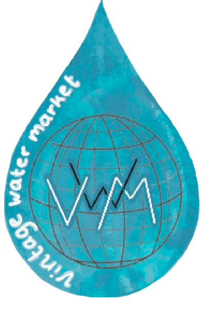

Het begon allemaal in 1883,het stadsbestuur besloot om de straathandelaars rondom Jodenbreestraat te verzamelen bij waterlooplein.
Sinds 1885 werd het plein een dagmarkt met uitzondering zaterdagen.
De echte Joodse waterlooplein markt werd afgekapt in 1941 door de jodenvervolging.
Na de Jodenvervolging was er een te kort aan goederen in Amsterdam waardoor een vlooienmarkt een goede oplossing was.
In de jaren 50 ging het een stuk beter met de Nederlandse economie.
In 1977 werd er aan een gemeentehuis gebouwd waardoor Waterlooplein moest verhuizen naar Rapenburgerstraat.
Na een tijdje mocht de waterlooplein markt weer terug naar het oude vertrouwde plekje.
Sinds 1 oktober 1988 is de markt terug in de waterlooplein markt en is het elke dag open met uitzondering zondag.